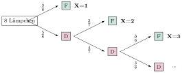

Aufgabe 6.5
In einem Karton sind 8 Lämpchen, 5 davon sind defekt. Wie oft im Mittel muss man dem Karton zufällig Lämpchen entnehmen, bis man ein funktionstüchtiges in Händen hält?
- Definieren Sie $X$ = Anzahl Ziehungen bis zum ersten funktionierenden Lämpchen
- Erstellen Sie ein Baumdiagramm für das sukzessive Ziehen ohne Zurücklegen
- Beachten Sie, dass sich die Wahrscheinlichkeiten nach jedem Zug ändern
- $X$ kann Werte von 1 bis 6 annehmen (warum nicht mehr?)
- Berechnen Sie $P(X=k)$ für jedes $k$ über die Pfadwahrscheinlichkeiten
Ausgangssituation:
- 8 Lämpchen insgesamt
- 5 defekte Lämpchen (D)
- 3 funktionstüchtige Lämpchen (F)
- $X$ = Anzahl Ziehungen bis zum ersten funktionstüchtigen Lämpchen
Baumdiagramm für das Ziehen ohne Zurücklegen:

Mögliche Werte von X:
$X$ kann die Werte 1, 2, 3, 4, 5 oder 6 annehmen. Warum maximal 6? Nach spätestens 6 Ziehungen hat man alle 5 defekten Lämpchen gezogen und muss beim 6. Zug ein funktionierendes erhalten.
Bestimmung der Verteilung:
$P(X=1)$: Direkt beim ersten Zug ein funktionierendes Lämpchen $$P(X=1) = \frac{3}{8}$$
$P(X=2)$: Erst defekt, dann funktionierend $$P(X=2) = P(\text{1. defekt}) \cdot P(\text{2. funktionierend | 1. defekt}) = \frac{5}{8} \cdot \frac{3}{7} = \frac{15}{56}$$
$P(X=3)$: Zwei defekte, dann funktionierend $$P(X=3) = \frac{5}{8} \cdot \frac{4}{7} \cdot \frac{3}{6} = \frac{60}{336} = \frac{5}{28}$$
$P(X=4)$: Drei defekte, dann funktionierend $$P(X=4) = \frac{5}{8} \cdot \frac{4}{7} \cdot \frac{3}{6} \cdot \frac{3}{5} = \frac{180}{1680} = \frac{3}{28}$$
$P(X=5)$: Vier defekte, dann funktionierend $$P(X=5) = \frac{5}{8} \cdot \frac{4}{7} \cdot \frac{3}{6} \cdot \frac{2}{5} \cdot \frac{3}{4} = \frac{360}{6720} = \frac{3}{56}$$
$P(X=6)$: Alle fünf defekten, dann funktionierend $$P(X=6) = \frac{5}{8} \cdot \frac{4}{7} \cdot \frac{3}{6} \cdot \frac{2}{5} \cdot \frac{1}{4} \cdot \frac{3}{3} = \frac{360}{20160} = \frac{1}{56}$$
Verteilungstabelle:
| $k$ | 1 | 2 | 3 | 4 | 5 | 6 |
| $P(X=k)$ | $\frac{3}{8}$ | $\frac{15}{56}$ | $\frac{5}{28}$ | $\frac{3}{28}$ | $\frac{3}{56}$ | $\frac{1}{56}$ |
| dezimal | 0.375 | 0.268 | 0.179 | 0.107 | 0.054 | 0.018 |
Kontrolle:
Bringen wir alle Wahrscheinlichkeiten auf den Nenner 56: $$\frac{21}{56} + \frac{15}{56} + \frac{10}{56} + \frac{6}{56} + \frac{3}{56} + \frac{1}{56} = \frac{56}{56} = 1 \checkmark$$
Berechnung des Erwartungswerts:
\begin{align*} E[X] &= \sum_{k=1}^{6} k \cdot P(X=k)\\ &= 1 \cdot \frac{3}{8} + 2 \cdot \frac{15}{56} + 3 \cdot \frac{5}{28} + 4 \cdot \frac{3}{28} + 5 \cdot \frac{3}{56} + 6 \cdot \frac{1}{56}\\ &= \frac{3}{8} + \frac{30}{56} + \frac{15}{28} + \frac{12}{28} + \frac{15}{56} + \frac{6}{56} \end{align*}
Auf gemeinsamen Nenner 56: $$E[X] = \frac{21}{56} + \frac{30}{56} + \frac{30}{56} + \frac{24}{56} + \frac{15}{56} + \frac{6}{56} = \frac{126}{56} = 2.25$$
Alternative Lösung über kombinatorische Überlegungen:
Bemerkung: Diese Aufgabe kann auch mit den Methoden aus Kapitel 1 (Kombinatorik) gelöst werden.
Die Wahrscheinlichkeit, dass das $k$-te gezogene Lämpchen das erste funktionierende ist, entspricht dem Anteil der Anordnungen, bei denen die ersten $k-1$ Plätze mit defekten und der $k$-te Platz mit einem funktionierenden Lämpchen besetzt ist:
$$P(X=k) = \frac{\text{Anzahl günstiger Anordnungen}}{\text{Anzahl aller Anordnungen der ersten } k \text{ Lämpchen}}$$
Für $P(X=3)$ beispielsweise: $$P(X=3) = \frac{\binom{5}{2} \cdot \binom{3}{1}}{\binom{8}{3}} = \frac{10 \cdot 3}{56} = \frac{30}{56} = \frac{5}{28}$$
Dies führt zum gleichen Ergebnis wie die Baumdiagramm-Methode.
Interpretation:
Im Mittel muss man 2.25 Lämpchen entnehmen, bis man ein funktionstüchtiges erhält. Dies macht intuitiv Sinn, da mehr als die Hälfte der Lämpchen defekt sind, man also im Schnitt mehr als 2 Versuche braucht.
Im Video: Etappe 4 · Erwartungswert bei 8:06